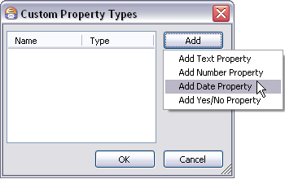
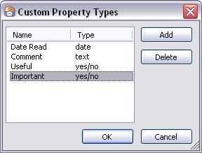
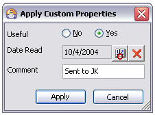
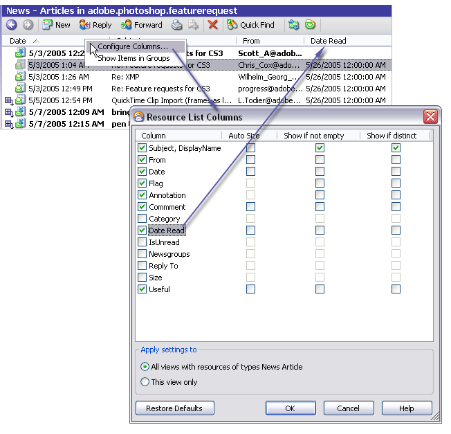
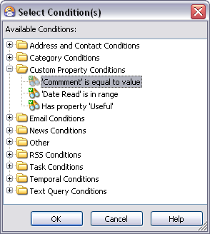

Custom Properties
Custom Properties are bits of data that you can define and apply to resources, either singly or several at once. The data then becomes a property of the resource which you can use to define Conditions and Exceptions when creating Views, and when using Advanced Search. You can also use the data in Custom Properties as a basis for sorting the resources in the Items List.
Custom Properties are something of an advanced feature that can help "power users" of Omea ReaderOmea Pro to create highly customized and even more narrow searches and Views, and yet another level of organization. If you are new to the product, you can safely wait to tackle this feature until after you have mastered the basic techniques for doing searches and Views.
Custom Property Types
There are several types of Custom Properties defined by the kind of data they store.
| Value | Meaning |
|---|---|
| Text | The data value stored in the property is text. For example: Book |
| Number | The data value stored in the property is a number. The number must be a positive or negative whole number (i.e. no decimal). For example: 42 or -88 |
| Date | The data value stored in the property is a date. For example: 10/4/2004 12:00 AM |
| Yes/No | The data value stored in the property is Yes or No. |
Defining Custom Properties
The first step in using Custom Properties is to define one or more. The thing to keep in mind when deciding what properties to define is that all the properties you define get applied when you apply Custom Properties to a resource.
Each Custom Property has two attributes: Name and Type. You specify both when creating a new Custom Property definition.
To define a new Custom Property:
- Choose Tools | Configure Custom Property Types… on the main menu. The Custom Properties dialog appears.
- Click Add and choose the property type from the pop-up list.
- Type a name for the new property in the Name field and press Enter.
- Click OK to close the dialog.
The dialog may look the following way.

Custom Property Types dialog

The Custom Property Types dialog (several types of properties have been added)
Deleting Custom Properties
To delete a Custom Property:
- Choose Tools | Configure Custom Property Types…
on the main menu.
The Custom Properties dialog appears. - In the list of Custom Properties, select the one you want to delete.
-
Click the Delete button.
When you delete a Custom Property, any resources to which it has been applied will automatically have the property and its value removed. Any Views that use it in a Condition or Exception will be deleted. If a column has been configured for the property in the Items List, it will be removed.
Applying Custom Properties to Resources
Once you have defined Custom Properties, you can apply them to resources, assigning values in the process. For example, supposed you defined a date type property named Date Read, and a Yes/No property named Useful. When you apply Custom Properties to a resource you can set an actual date for Date Read and a "Yes" or "No" value for Useful.
To apply Custom Properties to resources:
- In the Items List, select the resource item to which you want to apply Custom Properties. If more than one item will have the same value for a property (Date Read, for example) you can select multiple items in the list and apply the properties with the same values to all items at once.
- Right-click and choose Apply Custom Properties
on the context menu or navigate to the Links and Actions pane and click Edit Custom Properties.
The Apply Custom Properties dialog appears. The dialog lists all the Custom Properties you have currently defined. There is an edit control for each property in the dialog, appropriate for the property type, which you use to set a value for the respective property. - Set values as desired for each property in the dialog. It is all right to leave blank values for text, number, and date type properties.
- Click Apply to apply the properties and values to the selected resource item(s).

Applying Custom Properties to a resource dialog
Showing Columns for Custom Properties in the Items List
When you define Custom Properties, the resource items to which you apply them can display the property values in columns in the Items List in the main window. For example, suppose you have defined a Custom Property Date Read, and you applied this property to a newsgroup article with a date value of 10/4/2002 12:00 PM. You can configure a column for the Date Read property in the Items List. The value you set when you applied the property to the article will then appear in the Date Read column for the specific news article.
Showing columns for Custom Properties in the Items List
To display a column for a Custom Property:
- Select the resource type tab in the main window (News, for example).
- Right-click on the column header bar in the Items
List (see picture above), and choose Configure Columns…
The Resource List Columns dialog appears. - Locate the name of the Custom Property in the dialog and check the box next to it.
The column for the Custom Property appears in the items list after you click OK to close the dialog.
Using Custom Properties to Sort the Items List
When you have configured a column for a Custom Property, you can sort the Items List based on the values of the property as applied to items in the list. Click the Custom Property column header to sort the items in the Items List.
Using Custom Properties
Once defined and applied, you can use Custom Properties to help you organize and find the resources to which they have been applied.
For example, suppose you have defined a Custom Property named Date Read and applied it to a number of articles in a newsgroup, along with a date value for each of the different articles having the property. When you click the column header for the Date Read column, the list sorts itself according to the value of the Date Read property. Any articles in the list that do not have the Date Read property applied to them will show no value in the Date Read column, and will appear in the list after the ones that do have it. The items having the property, as we said, are sorted by the date value.
You can toggle the order of the sorting between ascending and descending by repeatedly clicking the column header. (This applies to all columns, not just Custom Property columns).
Using Custom Properties with Advanced Search
You can use Custom Properties as a Condition or Exception when using Advanced Search. When Custom Properties have been defined, a folder node named Custom Property Conditions appears in the Select Condition(s) dialog. A condition for each of the Custom Properties currently defined appears under this folder.

The Select Conditions dialog with custom property conditions
You can select one or more Custom Property conditions as a Condition or Exception for the search.
For more information, see Advanced Search.
Using Custom Properties in Views
When creating Views, you can use Custom Properties in the same was as described above for Advanced Search. The same Select Condition dialog is used, and the same conditions are available for Views as for Advanced Search. You can select one or more Custom Property conditions as a Condition or Exception for the View.
For more information, see Organizing Using Views.
See also: